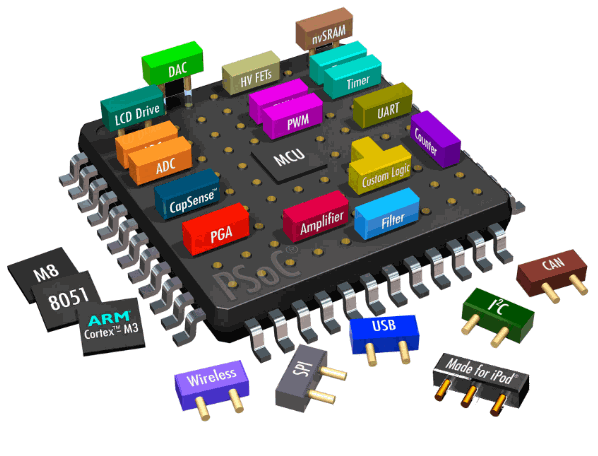

Het woord fysiek zegt het eigenlijk al, het is de laag die jij ook kunt zien en aanraken. Deze bestaat uit
de hardware, met de term hardware wordt er gewezen naar alle fysieke componenten of onderdelen die in
een computer een rol spelen er tegenover staat de software. Bij de fysieke laag kun je denken aan dingen zoals
kabels, netwerkkaarten en switches. De fysieke laag zorgt eigenlijk voor de verbinding en overdracht van gegevens tussen apparaten op een netwerk!
De fysieke laag is de allereerste en onderste laag van het OSI-model, hij bestaat uit allerlei elektrische en
mechanische definities van een transportmedium en het signaal.Het transportmedium verwijst naar het fysieke medium dat wordt gebruikt om
gegevens te verzenden. Denk hierbij aan glasvezelkabels, draadloze signalen of satellietverbindingen. (Vandaar ook het woord transport!)
De processor
De processor is een hardwarecomponent die dus deel uitmaakt van de fysieke laag van een device. Hij staat ook wel bekend als de CPU (Central Processing Unit) en is
een essentieel onderdeel van de fysieke laag. Hij is verantwoordelijk voor het uitvoeren van berekeningen en het verwerken van gegevens op het elektronische niveau.
Zie het een beetje net als uw eigen brein die voor veel dingen onbewust verantwoordelijk is! Hij stuurt andere hardwarecomponenten aan om taken uit te voeren. Het ALU (Arithmic Logic Unit) in de CPU is een belangrijk onderdeel dat ook
verantwoordelijk is voor berekeningen en andere logische operaties. Verder bevat de processor ook een Control Unit. De Control Unit
is verantwoordelijk voor het coördineren en controleren van de uitvoering van instructies. Het dient als een soort dirigent
die de verschillende onderdelen van de CPU aanstuurt en ervoor zorgt dat de instructies in de juiste order (volgorde) worden uitgevoerd. Een soort verkeersregelaar
van de CPU.
Twee taken van deze onmisbare processor
Uitvoeren van berekeningen
Door middel van elektrische signalen die door de processor worden verwerkt en miljoenen kleine schakelaars, ook wel transistors genoemd, is de processor in staat om berekeningen uit te voeren.
Als je deze schakelaars wat instructiesets en algoritmen geeft die in de software zijn geprogrammeerd, kan de processor lekker rekenen!!
Maar hoe worden de gegevens dan verwerkt?
Door de gegevens te ontvangen, te 'interpreteren' en vervolgens de juiste bewerkingen uit te voeren op basis van de instructies die zijn geprogrammeerd in de software worden de gegevens
verwerkt. Hij maakt hierbij gebruik van verschillende interne componenten zoals registers en caches om gegevens op
te slaan en snel toegankelijk te maken. Caches zijn tijdelijke opslagplaatsen voor de gegevens. Leuke toepassing ervan in ons leven:
Op snapchat kun je opslagruimte vrijmaken door de cache te legen. Door middel van logische eenheden kan de processor gegevens manipuleren (hiermee bedoel ik aanpassen). En zo worden dan lastige taken
toch uitgevoerd en verwerkt.
Werkgeheugen (RAM/ROM)
Het werkgeheugen van de fysieke laag verwijst meestal naar het RAM. Dit staat voor Random Access Memory. Het is het type geheugen dat samenwerkt met de processoren wordt gebruikt om gegevens en programma's op te slaan die actief worden gebruikt
door de computer terwijl deze aan staat. RAM is een volatiel iets, dit betekent dat zodra jij de computer uitschakelt, de gegevens worden gewist. Het doel van de RAM is om snel toegang te verlenen tot
gegevens voor de processor. En daardoor verbetert de prestatie van het device in zijn geheel. Hoe mooi! Het wordt ook wel het werkgeheugen genoemd. Dus, hij bestaat uit allerlei geheugencellen die werken onder spanning en zodra de computer uit wordt gezet, dan
stoppen die er ook mee. Het is immers een tijdelijk werkgeheugen. De hoeveelheid RAM in een computersysteem kan sterk verschillen, afhankelijk van het type computer en het doel ervan. Moderne computers hebben vaak minstens enkele gigabytes (GB) RAM,
maar krachtige systemen zoals servers of werkstations kunnen veel meer RAM hebben, variërend van tientallen gigabytes tot zelfs terabytes aan RAM.
ROM staat voor Read Only Memory. Het staat tegenover RAM en is een geheugen dat niet tijdelijk is maar juist wordt gebruikt om permanente gegevens op te slaan. Zoals het BIOS (Basic Input/Output System) van een computer.
De inhoud van ROM blijft behouden, zelfs wanneer je de computer of het stroom uitschakelt. Ook bij de ROM kan de hoeveelheid in het systeem
sterk variëren. Hoewel, het is vaak wel een stuk kleiner dan de hoeveelheid RAM! Kortom de RAM is niet vluchtig en de ROM weer wel.
Bus
Bus is een systeem dat zich in de computer bevindt en informatie doorgeeft tussen de verschillende onderdelen zoals de processor, het geheugenopslag en de opslagapparaten.
Je kunt de bus zien als een informatiesnelweg. Bussen kunnen variëren in breedte (hoeveel bits ze tegelijk kunnen overdragen).
Moederbord
De moederbord is het belangrijkste circuitbord in een computer waar alle componenten op worden aangesloten. Je kunt het zien als een soort
zenuwstelsel van een computer en verbindt alle hardwarecomponenten en randapparatuur met elkaar. Hierdoor kunnen ze effectief samenwerken en communiceren.
Het moedebord bevat een specifieke aansluiting waarin de CPU wordt geïnstalleerd en dient als het brein voor de logische berekeningen en
uitwerkingen. Verder zijn moederborden beschikbaar in verschillende formaten zoals ATX, Micro ATX en Mini ITX.
System-on-a-chip

Een system on a Chip (SoC) is een geïntegreerde schakeling (IC) die alle belangrijke hardwarecomponenten en subsystemen bevat die nodig zijn voor het
functioneren van een elektronisch apparaat of computersysteem. Denk aan de processor, de grafische chip, geheugen, verbindingsinterfaces en nog een hoop andere technische zaken. Hier is een voorbeeldje van wat er zich allemaal op een SoC bevindt:
Het is een soort hart van je telefoon (bijvoorbeeld) hij zorgt ervoor dat de apps draaien, het sherm wordt aangestuurd, je kunt bellen, internetten en nog veel meer.
Door alle hardware te combineren op één chip is de SoC enorm klein, wat natuurlijk perfect is voor smartphones maar het is ook energiezuinig, iets dat ook zeer belangrijk is.
Permanent geheugen/opslagmedia
Het permanent geheugen zegt het eigenlijk zelf al. Dit deel slaat informatie langdurig op zelfs als het apparaat is uitgeschakeld bijvoorbeeld in een
solid state drive (SSD), of op een hardeschijf. Anders dan het RAM (Random Access Memory), dat vluchtig is en zijn gegevens verliest wanneer de stroom wordt onderbroken, behoudt permanent geheugen de opgeslagen informatie gedurende langere periodes, zelfs jaren of decennia.
Randapparatuur
Randapparatuur zijn extra apparaten die je aan je computer of andere apparatuur kunt koppelen om specifieke taken uit te voeren. Stel je voor je computer is het
brein. Dan zijn de randapparaturen de 'extra handen' die je helpen om dingen te doen die je computer niet alleen kan. Zoals iets aanklikken,
dat doe JIJ met de muis. Enkele voorbeelden zijn: de Toetsenbord, de muis, de monitor, de speakers, een microfoon of een webcam. Noem het maar op. Kortom, randapparatuur zijn extra apparaten die je kunt aansluiten op je computer
om verschillende taken uit te voeren, zoals tekst typen, geluid horen, afbeeldingen bekijken, enzovoort. Ze breiden de mogelijkheden van je computer uit en maken het mogelijk om verschillende soorten werk te doen.
Verbindingen: kabels/interfaces
Verbindingen, kabels en interfaces zijn manieren waarop je elektrische apparaten met elkaar kunt verbinden.
Kabels: Dit zijn fysieke draden of snoeren die apparaten met elkaar verbinden. Denk hierbij aan de kabel die
je gebruikt om je telefoon op te laden of de kabels die je computer met een monitor of printer verbinden.
Interfaces: Interfaces zijn aansluitingen of poorten op apparaten waar je kabels in kunt pluggen. Bijvoorbeeld, de USB-poort op je computer op je computer
is een interface waarin je je USB-kabel kunt steken om een muis of toetsenbord aan te sluiten.
Kortom, met de juiste kabels en interfaces kunnen apparaten informatie met elkaar delen zoals het overbrengen van foto's van
je camera naar je computer, of het aansluiten van luidsprekers op een stereo-installatie.
Von Neumannarchitectuur
De Von Neumann-architectuur beschrijft wat de belangrijkste onderdelen zijn van de computer. Dit zijn de centrale verwerkingseenheid, het computergeheugen, inputmechanisme en outputmechanisme.
Wil je meer weten over dit onderwerp? Dan verwijs ik je graag door naar de pagina